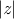
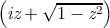
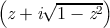
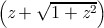
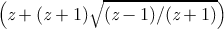
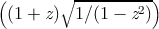
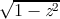
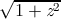
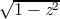
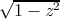

Common Lisp не содержит тип данных, который точно отображает
иррациональные числовые значения. В данном разделе функции описаны
так, как если бы результаты были математически точными, но фактически
все они возвращают число с плавающей точкой приблизительно равное
настоящему математическому значению. В некоторых местах изложены
математические тождества, связанные со значениями функций, однако, два
математически идентичных выражения могут быть различными по причине
ошибок процесса аппроксимации при вычислениях чисел с плавающей
точкой.
Когда все аргументы для функции данного раздела являются
рациональными и Ъ математический результат также является
(математически) рациональным, тогда, если не указано иное, реализация может
вернуть или точный результат типа rational или приближенное значение с
плавающей точкой одинарной точности. Если все аргументы рациональны, но
результат не может быть рациональным, тогда возвращается число с
плавающей точкой одинарной точности.
Если все переданные в функцию аргументы принадлежат типу
(or rational (complex rational)) и Ъ математический результат
является (математически) комплексным числом с рациональными
действительной и мнимой частями, тогда, если не указано иное, реализация
может вернуть или точный результат типа (or rational (complex
rational)) или приближенный типа с плавающей точкой с одинарной
точностью single-float (только если мнимая часть равна нулю) или
(complex single-float). Если все аргументы типа (or rational (complex
rational)), но результат не может быть выражен рациональными или
комплексным рациональным числом, тогда он будет принадлежать типу
single-float (только если мнимая часть равна нулю) или (complex
single-float).
Все функции за исключением expt подчиняются правилам неявного
приведения плавающей точки или комплексного числа. Когда, возможно
после приведения типов, все аргументы становятся с плавающей точкой или
комплексным числом с плавающей точкой, тогда результат будет такого же
типа, что и аргумента, если не указано иное.
____________________________
Заметка для реализации: Для понимания работы функций из данного раздела
может быть полезной «поваренная книга чисел с плавающей точкой» от Cody и
Waite [14].
___________________________________________________________________________________________________________
Наряду с обычными одно-аргументными и двух-аргументными
экспоненциальными и логарифмическими функциями, sqrt рассматривается
как экспоненциальная функция, потому что она возводит число в степень
1/2.
Возвращает е, возведённое в степень number, где е является основанием
натурального логарифма.
Возвращает base-number, возведённый в степень power-number. Если
base-number принадлежит типу rational и power-number — integer,
тогда результат вычислений будет принадлежать типу rational, в
противном случае результат будет приближенным числом с плавающей
точкой.
X3J13 voted in March 1989 to clarify that provisions similar to those of the
previous paragraph apply to complex numbers. If the base-number is of type
(complex rational) and the power-number is an integer, the calculation will
also be exact and the result will be of type (or rational (complex rational));
otherwise a floating-point or complex floating-point approximation may
result.
Если power-number равен 0 (ноль целочисленного типа), тогда результат
всегда будет значение 1, такого же типа что и base-number, даже если
base-number равен нулю (любого типа). То есть:
(expt
x 0)
≡ (coerce 1 (type-of
x))
Если power-number является нулём любого другого типа данных, тогда
результат также равен 1 такого же типа, что и аргументы после применения
правил приведения числовых типов, с одним условием: если base-number
равен нулю, когда power-number является нецелочисленным нулём, то это
является ошибкой.
Реализация expt может использовать различные алгоритмы для случаев
с рациональным и с плавающей точкой аргументом power-number. Суть в
том, что в большинстве случаев боле аккуратный результат может быть
достигнут для рационального power-number. Например, (expt pi 16) и (expt
pi 16.0) могут вернуть слегка разные результаты, если в первом
случае алгоритм «повторных квадратов», а во втором использование
логарифмов.
Результатом expt может быть комплексное число, даже если ни один
аргумент не был комплексным. Такой результат получается если base-number
отрицательное число и power-number не является целочисленным.
Следует отметить, что (expt -8 1/3) не может вернуть -2, хотя и -2
несомненно является одним из кубических корней для -8, но основным
корнем является аппроксимированное комплексное число #C(1.0
1.73205).
Функция возвращает логарифм числа number c основанием base, которое
по умолчанию равно e (эпсилон, основание для натурального логарифма).
Например:
(log 8.0 2)
⇒ 3.0
(log 100.0 10)
⇒ 2.0
В зависимости от реализации, результатом (log 8 2) может быть как 3,
так и 3.0. Например:
(log -1.0)
≡ (complex 0.0 (float pi 0.0))
X3J13 voted in January 1989 to specify certain floating-point behavior when
minus zero is supported. As a part of that vote it approved a mathematical
definition of complex logarithm in terms of real logarithm, absolute value, arc
tangent of two real arguments, and the phase function as
Logarithm
log  + i phase z
This specifies the branch cuts precisely whether minus zero is supported or not; see
phase and
atan.
Функция возвращает квадратный корень числа number. Если number не
является комплексным числом и отрицательно, тогда результат будет
комплексным числом. Например:
(sqrt 9.0)
⇒ 3.0
(sqrt -9.0)
⇒ #c(0.0 3.0)
В зависимости от реализации результат (sqrt 9) может быть как 3,
так и 3.0. Результат (sqrt -9) может быть как #(0 3) или #c(0.0
3.0).
X3J13 voted in January 1989 to specify certain floating-point behavior when
minus zero is supported. As a part of that vote it approved a mathematical
definition of complex square root in terms of complex logarithm and exponential
functions as
This specifies the branch cuts precisely whether minus zero is supported or not; see
phase and
atan.
Целочисленный квадратный корень: аргумент должен быть
неотрицательным целым, и результат является наибольшим целым числом,
которое меньше или равно точному положительному квадратному корню
аргумента.
(isqrt 9)
⇒ 3
(isqrt 12)
⇒ 3
(isqrt 300)
⇒ 17
(isqrt 325)
⇒ 18
Некоторые из функций в данном разделе, такие как abs и signum,
несомненно не относятся к тригонометрическим функциям, когда
рассматриваются как функции только для действительных чисел.
Однако, путь, с помощью которого они расширены для операций на
комплексных числах, делает их связь с тригонометрическими функциями
явной.
Возвращает абсолютное значение аргумента. Для некомплексных чисел x,
(abs
x)
≡ (if (minusp
x) (-
x)
x)
и результат всегда имеет тот же тип, что и аргумент.
Для комплексных чисел z, абсолютное значение может быть вычислено
как
(sqrt (+ (expt (realpart
z) 2) (expt (imagpart
z) 2)))
__________________________________________________________________________
Заметка для реализации: Аккуратные разработчики не будут напрямую
использовать эту формулу для всех комплексных чисел. Очень большие и очень
маленькие части комплексных чисел будут обрабатываться специализированно для
избежания выходов за верхние и нижние границы значений.
___________________________________________________________________________________________________________
Например:
Результатом (abs #(3 4)) может быть или 5 или 5.0, в зависимости от
реализации.
Аргументом (так называется функция phase) числа z (arg(z) ≡(phase z))
является угол φ (в радианах) радиус-вектора точки, соответствующей
комплексному числу z.
X3J13 voted in January 1989 to specify certain floating-point behavior when
minus zero is supported; phase is still defined in terms of atan as above, but
thanks to a change in atan the range of phase becomes − π inclusive to π
inclusive. The value − π results from an argument whose real part is
negative and whose imaginary part is minus zero. The phase function
therefore has a branch cut along the negative real axis. The phase of
+ 0 + 0i is + 0, of + 0 − 0i is − 0, of − 0 + 0i is + π, and of − 0 − 0i is
− π.
Если аргумент является комплексным числом с частями из чисел с
плавающей точкой, то результатом является число с плавающей точкой того
же типа. Если аргумент является числом с плавающей точкой, то
результатом является число с плавающей точкой того же типа. Если
аргумент является комплексным числом с частями из рациональных
чисел, то результатом является число с плавающей точкой одинарного
типа.
По определению,
(signum
x)
≡ (if (zerop
x)
x (/
x (abs
x)))
Для рационального числа, signum будет возвращать один из вариантов:
-1, 0 или 1, в соответствии с тем, является ли число отрицательным, нулём
или положительным. Для числа с плавающей точкой, результатом будет
число с плавающей точкой того же типа и значением: − 1, 0 или 1. Для
комплексного числа z, (signum z) является комплексным числом с таким
же аргументом (phase), но с единичным модулем. Но если z равен
комплексному нулю, результатом является само число z. Например:
(signum 0)
⇒ 0
(signum -3.7L5)
⇒ -1.0L0
(signum 4/5)
⇒ 1
(signum #C(7.5 10.0))
⇒ #C(0.6 0.8)
(signum #C(0.0 -14.7))
⇒ #C(0.0 -1.0)
Для некомплексных рациональных чисел signum является рациональной
функцией, но для комплексных чисел может быть иррациональной.
sin возвращает синус аргумента, cos — косинус, tan — тангенс. Аргумент
рассматривается как угол в радианах. Аргумент может быть комплексным
числом.
Функция вычисляет ei⋅radians. Имя cis обозначает «cos + i sin», потому что
ei𝜃 = cos 𝜃 + i sin 𝜃. Аргумент рассматривается как угол в радианах и может
быть любым некомплексным числом. Результатом является комплексное
число, у которого действительная часть это косинус аргумента, и мнимая
— синус аргумента. Другими словами, результат это комплексное
число, у которого аргумент (фаза) равна (mod 2∕pi) и модуль равен
единице.
_________________________________________________________________
Заметка для реализации: Чаще всего дешевле вычислить синус и косинус угла
вместе, чем выполнять два раздельных вычисления.
___________________________________________________________________________________________________________
asin возвращаем арксинус аргумента, и acos — арккосинус аргумента.
Результат будет в радианах. Аргумент может быть комплексным
числом.
Функции арксинус и арккосинус могут быть математически определены
для аргумента z следующим образом:
Арксинус
−i log 
Арккосинус
−i log 
Следует отметить, что результат
asin или
acos может быть комплексным
числом, даже если аргумент не являлся комплексным. Такое происходит,
когда абсолютное значение аргумента превышает 1.
Kahan [25] suggests for acos the defining formula
or even the much simpler
(π∕2) − arcsin z. Both equations are mathematically
equivalent to the formula shown above.
__________________________________________________________________________
Заметка для реализации: These formulae are mathematically correct, assuming
completely accurate computation. They may be terrible methods for floating-point
computation. Implementors should consult a good text on numerical analysis. The
formulae given above are not necessarily the simplest ones for real-valued computations,
either; they are chosen to define the branch cuts in desirable ways for the complex
case.
___________________________________________________________________________________________________________
Функция вычисляет арктангенс и возвращает результат в радианах.
Ни один из двух аргументов y и x не может быть комплексным. Знаки y и
x используются для определения квадранта. x может быть нулём при
условии, что y не ноль. Значение atan лежит между − pi (невключительно)
и pi (включительно). Следующая таблица описывает различные специальные
случаи.
| Условие | Декартово местоположение | Промежуток результата |
| y = +0 | x > 0 | Точно выше положительной оси x | + 0 |
| y > 0 | x > 0 | Квадрант I | + 0 < result < π∕2 |
| y > 0 | x = ±0 | Положительная ось y | π∕2 |
| y > 0 | x < 0 | Квадрант II | π∕2 < result < π |
| y = +0 | x < 0 | Точно ниже негативной оси x | π |
| y = −0 | x < 0 | Точно выше отрицательной оси x | π |
| y < 0 | x < 0 | Квадрант III | − π < result < −π∕2 |
| y < 0 | x = ±0 | Отрицательная ось y | − π∕2 |
| y < 0 | x > 0 | Квадрант IV | − π∕2 < result < −0 |
| y = −0 | x > 0 | Точно ниже положительной оси x | − 0 |
| y = +0 | x = +0 | Рядом с центром | + 0 |
| y = −0 | x = +0 | Рядом с центром | − 0 |
| y = +0 | x = −0 | Рядом с центром | π |
| y = −0 | x = −0 | Рядом с центром | − π |
| |
Следует отметить, что случай y = 0,x = 0 при отсутствии минус ноля
является ошибкой, но четыре случая y = ±0,x = ±0 определены при условии
существования минус ноля.
Если не указывать x, y может быть комплексным. Результатом функции
является арктангенс y, который может быть определён следующей
формулой:
Арктангенс
log(1+iy)−log(1−iy)
2i
Для некомплексного аргумента y, результат будет некомплексным и
будет лежать между − π∕2 и π∕2 (оба невключительно).
_______________
Заметка для реализации: This formula is mathematically correct, assuming
completely accurate computation. It may be a terrible method for floating-point
computation. Implementors should consult a good text on numerical analysis. The
formula given above is not necessarily the simplest one for real-valued computations,
either; it is chosen to define the branch cuts in desirable ways for the complex
case.
__________________________________________________________________________
Данная глобальная переменная содержит значение наиболее
приближенное к pi в длинном формате числа с плавающей точкой.
Например:
(defun sind (x) ;Аргумент в градусах
(sin (* x (/ (float pi x) 180))))
Приближение к pi с другими точностями может быть выполнено с
помощью (float pi x), где x является числом с плавающей точкой
необходимой точности, или с помощью (coerce pi type), где type является
именем необходимого типа, как например short-float.
Данные функции вычисляют гиперболический синус, косинус, тангенс,
арксинус, арккосинус и арктангенс, которые для аргумента z математически
определены следующим образом:
Гиперболический синус
(e z −e−z)∕2
Гиперболический косинус
(e z + e−z)∕2
Гиперболический тангенс
(e z − e−z)∕(ez + e−z)
Гиперболический арксинус
log
Гиперболический арккосинус
log
Гиперболический арктангенс
log
Следует отметить, что результат acosh может быть комплексным, даже
если аргумент комплексным числом не был. Это происходит если аргумент
меньше 1. Также результат atanh может быть комплексным, даже если
аргумент не был комплексным. Это происходит если абсолютное значение
аргумента было больше 1.
_______________________________________________
Заметка для реализации: Эти формулы математически корректны, предполагая
совершенно точные вычисления. Но они могут быть неудобны для вычислений
чисел с плавающей точкой. Разработчики реализация должны ознакомится с
хорошей книгой по численному анализу. Вышеприведённые формы не обязательно
являются самыми простыми для вещественных вычислений. Они выбраны для
определения точек ветвлений для случаев использования комплексных
чисел.
__________________________________________________________________________
Многие иррациональные и трансцендентные функции на комплексной
плоскости многозначны. Например, в общем случае, логарифмическая
функция имеет бесконечное количество комплексных значений. В
каждом таком случае для возврата должно быть выбрано одно главное
значение.
Common Lisp определяет точки ветвления, главные значения и краевые
условия для комплексных функции в соотвествие с предложениями для
комплексных функций в APL [36]. Содержимое раздела по большей части
скопировано из этих предложений.
Indeed, X3J13 voted in January 1989 to alter the direction of continuity for
the branch cuts of atan, and also to address the treatment of branch cuts in
implementations that have a distinct floating-point minus zero.
The treatment of minus zero centers in two-argument atan. If there is no
minus zero, then the branch cut runs just below the negative real axis as before,
and the range of two-argument atan is (−π,π]. If there is a minus zero, however,
then the branch cut runs precisely on the negative real axis, skittering between
pairs of numbers of the form −x ± 0i, and the range of two-argument atan is
[−π,π].
The treatment of minus zero by all other irrational and transcendental
functions is then specified by defining those functions in terms of two-argument
atan. First, phase is defined in terms of two-argument atan, and complex abs in
terms of real sqrt; then complex log is defined in terms of phase, abs, and real
log; then complex sqrt in terms of complex log; and finally all others are defined
in terms of these.
Kahan [25] treats these matters in some detail and also suggests specific
algorithms for implementing irrational and transcendental functions in IEEE
standard floating-point arithmetic [23].
Remarks in the first edition about the direction of the continuity of branch
cuts continue to hold in the absence of minus zero and may be ignored if minus
zero is supported; since all branch cuts happen to run along the principal axes,
they run between plus zero and minus zero, and so each sort of zero is associated
with the obvious quadrant.
-
sqrt
The branch cut for square root lies along the negative real axis,
continuous with quadrant II. The range consists of the right half-plane,
including the non-negative imaginary axis and excluding the negative
imaginary axis.
X3J13 voted in January 1989 to specify certain floating-point behavior when
minus zero is supported. As a part of that vote it approved a mathematical
definition of complex square root:
This defines the branch cuts precisely, whether minus zero is supported or
not.
-
phase
The branch cut for the phase function lies along the negative real axis,
continuous with quadrant II. The range consists of that portion of the real
axis between − π (exclusive) and π (inclusive).
X3J13 voted in January 1989 to specify certain floating-point behavior when
minus zero is supported. As a part of that vote it approved a mathematical
definition of phase:
where
ℑz is the imaginary part of
z and
ℜz the real part of
z. This
defines the branch cuts precisely, whether minus zero is supported or
not.
-
log
The branch cut for the logarithm function of one argument (natural
logarithm) lies along the negative real axis, continuous with quadrant II.
The domain excludes the origin. For a complex number z, log z is defined to
be Therefore the range of the one-argument logarithm function is that strip of
the complex plane containing numbers with imaginary parts between − π
(exclusive) and π (inclusive).
The X3J13 vote on minus zero would alter that exclusive bound of − π to
be inclusive if minus zero is supported.
The two-argument logarithm function is defined as log bz = (log z)∕(log b).
This defines the principal values precisely. The range of the two-argument
logarithm function is the entire complex plane. It is an error if z is
zero. If z is non-zero and b is zero, the logarithm is taken to be
zero.
-
exp
The simple exponential function has no branch cut.
-
expt
The two-argument exponential function is defined as bx = ex log b. This
defines the principal values precisely. The range of the two-argument
exponential function is the entire complex plane. Regarded as a
function of x, with b fixed, there is no branch cut. Regarded as a
function of b, with x fixed, there is in general a branch cut along the
negative real axis, continuous with quadrant II. The domain excludes
the origin. By definition, 00 = 1. If b = 0 and the real part of x
is strictly positive, then bx = 0. For all other values of x, 0x is an
error.
-
asin
The following definition for arc sine determines the range and branch cuts:
This is equivalent to the formula
recommended by Kahan
[25].
The branch cut for the arc sine function is in two pieces: one along the
negative real axis to the left of − 1 (inclusive), continuous with quadrant II,
and one along the positive real axis to the right of 1 (inclusive),
continuous with quadrant IV. The range is that strip of the complex
plane containing numbers whose real part is between − π∕2 and
π∕2. A number with real part equal to − π∕2 is in the range if
and only if its imaginary part is non-negative; a number with real
part equal to π∕2 is in the range if and only if its imaginary part is
non-positive.
-
acos
The following definition for arc cosine determines the range and branch
cuts: or, which is equivalent,
arccos z = π
2 − arcsin z
The branch cut for the arc cosine function is in two pieces: one along the
negative real axis to the left of − 1 (inclusive), continuous with quadrant II,
and one along the positive real axis to the right of 1 (inclusive), continuous
with quadrant IV. This is the same branch cut as for arc sine. The range is
that strip of the complex plane containing numbers whose real part is
between zero and π. A number with real part equal to zero is in the range if
and only if its imaginary part is non-negative; a number with real
part equal to π is in the range if and only if its imaginary part is
non-positive.
-
atan
The following definition for (one-argument) arc tangent determines the
range and branch cuts:
X3J13 voted in January 1989 to replace the formula shown above with the
formula
arctan z = log(1 + iz) − log(1 −iz)
2i
This is equivalent to the formula
recommended by Kahan
[25]. It causes the upper branch cut to be
continuous with quadrant I rather than quadrant II, and the lower branch
cut to be continuous with quadrant III rather than quadrant IV; otherwise
it agrees with the formula of the first edition. Therefore this change alters
the result returned by
atan only for arguments on the positive imaginary
axis that are of magnitude greater than 1. The full description for this new
formula is as follows.
The branch cut for the arc tangent function is in two pieces: one along the
positive imaginary axis above i (exclusive), continuous with quadrant I, and
one along the negative imaginary axis below −i (exclusive), continuous
with quadrant III. The points i and −i are excluded from the domain. The
range is that strip of the complex plane containing numbers whose real
part is between − π∕2 and π∕2. A number with real part equal to
− π∕2 is in the range if and only if its imaginary part is strictly
negative; a number with real part equal to π∕2 is in the range if
and only if its imaginary part is strictly positive. Thus the range
of the arc tangent function is not identical to that of the arc sine
function.
-
asinh
The following definition for the inverse hyperbolic sine determines the
range and branch cuts: The branch cut for the inverse hyperbolic sine function is in two pieces: one
along the positive imaginary axis above i (inclusive), continuous with
quadrant I, and one along the negative imaginary axis below −i (inclusive),
continuous with quadrant III. The range is that strip of the complex
plane containing numbers whose imaginary part is between − π∕2
and π∕2. A number with imaginary part equal to − π∕2 is in the
range if and only if its real part is non-positive; a number with
imaginary part equal to π∕2 is in the range if and only if its real part is
non-negative.
-
acosh
The following definition for the inverse hyperbolic cosine determines the
range and branch cuts:
Kahan [25] suggests the formula
pointing out that it yields the same principal value but eliminates a
gratuitous removable singularity at
z = −1. A proposal was submitted to
X3J13 in September 1989 to replace the formula
acosh with that
recommended by Kahan. There is a good possibility that it will be
adopted.
The branch cut for the inverse hyperbolic cosine function lies along the real
axis to the left of 1 (inclusive), extending indefinitely along the negative real
axis, continuous with quadrant II and (between 0 and 1) with quadrant I.
The range is that half-strip of the complex plane containing numbers whose
real part is non-negative and whose imaginary part is between − π
(exclusive) and π (inclusive). A number with real part zero is in
the range if its imaginary part is between zero (inclusive) and π
(inclusive).
-
atanh
The following definition for the inverse hyperbolic tangent determines the
range and branch cuts:
WARNING! The formula shown above for hyperbolic arc tangent is
incorrect. It is not a matter of incorrect branch cuts; it simply does not
compute anything like a hyperbolic arc tangent. This unfortunate error in
the first edition was the result of mistranscribing a (correct) APL formula
from Penfield’s paper [36]. The formula should have been transcribed as
A proposal was submitted to X3J13 in September 1989 to replace the
formula atanh with that recommended by Kahan [25]:
There is a good possibility that it will be adopted. If it is, the
complete description of the branch cuts of
atanh will then be as
follows.
The branch cut for the inverse hyperbolic tangent function is in two pieces:
one along the negative real axis to the left of − 1 (inclusive), continuous
with quadrant II, and one along the positive real axis to the right of 1
(inclusive), continuous with quadrant IV. The points − 1 and 1 are
excluded from the domain. The range is that strip of the complex
plane containing numbers whose imaginary part is between − π∕2
and π∕2. A number with imaginary part equal to − π∕2 is in the
range if and only if its real part is strictly positive; a number with
imaginary part equal to π∕2 is in the range if and only if its real
part is strictly negative. Thus the range of the inverse hyperbolic
tangent function is not the same as that of the inverse hyperbolic sine
function.
With these definitions, the following useful identities are obeyed throughout
the applicable portion of the complex domain, even on the branch cuts:
| sin iz = i sinh z | sinh iz = i sin z | arctan iz = i arctanh z |
| cos i z = cosh z | cosh i z = cos z | arcsinh i z = i arcsin z |
| tan iz = i tanh z | arcsin iz = i arcsinh z | arctanh iz = i arctan z |
I thought it would be useful to provide some graphs illustrating the behavior
of the irrational and transcendental functions in the complex plane. It also
provides an opportunity to show off the Common Lisp code that was used to
generate them.
Imagine the complex plane to be decorated as follows. The real and imaginary
axes are painted with thick lines. Parallels from the axes on both sides at
distances of 1, 2, and 3 are painted with thin lines; these parallels are doubly
infinite lines, as are the axes. Four annuli (rings) are painted in gradated shades of
gray. Ring 1, the inner ring, consists of points whose radial distances
from the origin lie in the range [1∕4, 1∕2]; ring 2 is in the radial range
[3∕4, 1]; ring 3, in the range [π∕2, 2]; and ring 4, in the range [3,π]. Ring j is
divided into 2j+1 equal sectors, with each sector painted a different shade of
gray, darkening as one proceeds counterclockwise from the positive real
axis.
We can illustrate the behavior of a numerical function f by considering how it
maps the complex plane to itself. More specifically, consider each point z of the
decorated plane. We decorate a new plane by coloring the point f(z) with the same
color that point z had in the original decorated plane. In other words, the newly
decorated plane illustrates how the f maps the axes, other horizontal and vertical
lines, and annuli.
In each figure we will show only a fragment of the complex plane, with the real
axis horizontal in the usual manner ( −∞ to the left, + ∞ to the right) and the
imaginary axis vertical ( −∞i below, + ∞i above). Each fragment shows a region
containing points whose real and imaginary parts are in the range [−4.1, 4.1]. The
axes of the new plane are shown as very thin lines, with large tick marks
at integer coordinates and somewhat smaller tick marks at multiples of
π∕2.
Figure 12.1 shows the result of plotting the identity function (quite literally);
the graph exhibits the decoration of the original plane.
Figures 12.2 through 12.20 show the graphs for the functions sqrt, exp, log,
sin, asin, cos, acos, tan, atan, sinh, asinh, cosh, acosh, tanh, and atanh,
and as a bonus, the graphs for the functions , , (z − 1)∕(z + 1), and
(1 + z)∕(1 −z). All of these are related to the trigonometric functions in various
ways. For example, if f(z) = (z − 1)∕(z + 1), then tanh z = f(e2z), and if
g(z) = , then cos z = g(sin z). It is instructive to examine the graph for
 and try to visualize how it transforms the graph for sin into the graph
for cos.
Each figure is accompanied by a commentary on what maps to what and other
interesting features. None of this material is terribly new; much of it may be found
in any good textbook on complex analysis. I believe that the particular form
in which the graphs are presented is novel, as well as the fact that the
graphs have been generated as PostScript [1] code by Common Lisp code.
This PostScript code was then fed directly to the typesetting equipment
that set the pages for this book. Samples of this PostScript code follow
the figures themselves, after which the code for the entire program is
presented.
In the commentaries that accompany the figures I sometimes speak of mapping
the points ±∞ or ±∞i. When I say that function f maps + ∞ to a certain
point z, I mean that
Similarly, when I say that
f maps
−∞i to
z, I mean that
In other words, I am considering a limit as one travels out along one of the
main axes. I also speak in a similar manner of mapping
to one of these
infinities.
Here is a sample of the PostScript code that generated figure 12.1, showing
the initial scaling, translation, and clipping parameters; the code for one sector of
the innermost annulus; and the code for the negative imaginary axis. Comment
lines indicate how path or boundary segments were generated separately and then
spliced (in order to allow for the places that a singularity might lurk, in which
case the generating code can “inch up” to the problematical argument
value).
The size of the entire PostScript file for the identity function was about 68
kilobytes (2757 lines, including comments). The smallest files were the plots for
atan and atanh, about 65 kilobytes apiece; the largest were the plots for sin,
cos, sinh, and cosh, about 138 kilobytes apiece.
% PostScript file for plot of function IDENTITY
% Plot is to fit in a region 4.666666666666667 inches square
% showing axes extending 4.1 units from the origin.
40.97560975609756 40.97560975609756 scale
4.1 4.1 translate
newpath
-4.1 -4.1 moveto
4.1 -4.1 lineto
4.1 4.1 lineto
-4.1 4.1 lineto
closepath
clip
% Moby grid for function IDENTITY
% Annulus 0.25 0.5 4 0.97 0.45
% Sector from 4.7124 to 6.2832 (quadrant 3)
newpath
0.0 -0.25 moveto
0.0 -0.375 lineto
%middle radial
0.0 -0.375 lineto
0.0 -0.5 lineto
%end radial
0.0 -0.5 lineto
0.092 -0.4915 lineto
0.1843 -0.4648 lineto
0.273 -0.4189 lineto
0.3536 -0.3536 lineto
%middle circumferential
0.3536 -0.3536 lineto
0.413 -0.2818 lineto
0.4594 -0.1974 lineto
0.4894 -0.1024 lineto
0.5 0.0 lineto
%end circumferential
0.5 0.0 lineto
0.375 0.0 lineto
%middle radial
0.375 0.0 lineto
0.25 0.0 lineto
%end radial
0.25 0.0 lineto
0.2297 -0.0987 lineto
0.1768 -0.1768 lineto
%middle circumferential
0.1768 -0.1768 lineto
0.0922 -0.2324 lineto
0.0 -0.25 lineto
%end circumferential
closepath
currentgray 0.45 setgray fill setgray
[2598 lines omitted]
% Vertical line from (0.0, -0.5) to (0.0, 0.0)
newpath
0.0 -0.5 moveto
0.0 0.0 lineto
0.05 setlinewidth 1 setlinecap stroke
% Vertical line from (0.0, -0.5) to (0.0, -1.0)
newpath
0.0 -0.5 moveto
0.0 -1.0 lineto
0.05 setlinewidth 1 setlinecap stroke
% Vertical line from (0.0, -2.0) to (0.0, -1.0)
newpath
0.0 -2.0 moveto
0.0 -1.0 lineto
0.05 setlinewidth 1 setlinecap stroke
% Vertical line from (0.0, -2.0) to (0.0, -1.1579208923731617E77)
newpath
0.0 -2.0 moveto
0.0 -6.3553 lineto
0.0 -6.378103166302659 lineto
0.0 -6.378103166302659 lineto
0.0 -6.378103166302659 lineto
0.05 setlinewidth 1 setlinecap stroke
[84 lines omitted]
% End of PostScript file for plot of function IDENTITY
Here is the program that generated the PostScript code for the graphs shown
in figures 12.1 through 12.20. It contains a mixture of fairly general mechanisms
and ad hoc kludges for plotting functions of a single complex argument while
gracefully handling extremely large and small values, branch cuts, singularities,
and periodic behavior. The aim was to provide a simple user interface that
would not require the caller to provide special advice for each function to
be plotted. The file for figure 12.1, for example, was generated by the
call (picture ’identity), which resulted in the writing of a file named
identity-plot.ps.
The program assumes that any periodic behavior will have a period that is a
multiple of 2π; that branch cuts will fall along the real or imaginary axis; and that
singularities or very large or small values will occur only at the origin, at ± 1 or
±i, or on the boundaries of the annuli (particularly those with radius π∕2 or π).
The central function is parametric-path, which accepts four arguments: two real
numbers that are the endpoints of an interval of real numbers, a function that
maps this interval into a path in the complex plane, and the function to be
plotted; the task of parametric-path is to generate PostScript code (a series of
lineto operations) that will plot an approximation to the image of the
parametric path as transformed by the function to be plotted. Each of the
functions hline, vline, -hline, -vline, radial, and circumferential takes
appropriate parameters and returns a function suitable for use as the third
argument to parametric-path. There is some code that defends against
errors (by using ignore-errors) and against certain peculiarities of IEEE
floating-point arithmetic (the code that checks for not-a-number (NaN)
results).
The program is offered here without further comment or apology.
(defparameter units-to-show 4.1)
(defparameter text-width-in-picas 28.0)
(defparameter device-pixels-per-inch 300)
(defparameter pixels-per-unit
(* (/ (/ text-width-in-picas 6)
(* units-to-show 2))
device-pixels-per-inch))
(defparameter big (sqrt (sqrt most-positive-single-float)))
(defparameter tiny (sqrt (sqrt least-positive-single-float)))
(defparameter path-really-losing 1000.0)
(defparameter path-outer-limit (* units-to-show (sqrt 2) 1.1))
(defparameter path-minimal-delta (/ 10 pixels-per-unit))
(defparameter path-outer-delta (* path-outer-limit 0.3))
(defparameter path-relative-closeness 0.00001)
(defparameter back-off-delta 0.0005)
(defun comment-line (stream &rest stuff)
(format stream "~%% ")
(apply #’format stream stuff)
(format t "~%% ")
(apply #’format t stuff))
(defun parametric-path (from to paramfn plotfn)
(assert (and (plusp from) (plusp to)))
(flet ((domainval (x) (funcall paramfn x))
(rangeval (x) (funcall plotfn (funcall paramfn x)))
(losing (x) (or (null x)
(/= (realpart x) (realpart x)) ;NaN?
(/= (imagpart x) (imagpart x)) ;NaN?
(> (abs (realpart x)) path-really-losing)
(> (abs (imagpart x)) path-really-losing))))
(when (> to 1000.0)
(let ((f0 (rangeval from))
(f1 (rangeval (+ from 1)))
(f2 (rangeval (+ from (* 2 pi))))
(f3 (rangeval (+ from 1 (* 2 pi))))
(f4 (rangeval (+ from (* 4 pi)))))
(flet ((close (x y)
(or (< (careful-abs (- x y)) path-minimal-delta)
(< (careful-abs (- x y))
(* (+ (careful-abs x) (careful-abs y))
path-relative-closeness)))))
(when (and (close f0 f2)
(close f2 f4)
(close f1 f3)
(or (and (close f0 f1)
(close f2 f3))
(and (not (close f0 f1))
(not (close f2 f3)))))
(format t "~&Periodicity detected.")
(setq to (+ from (* (signum (- to from)) 2 pi)))))))
(let ((fromrange (ignore-errors (rangeval from)))
(torange (ignore-errors (rangeval to))))
(if (losing fromrange)
(if (losing torange)
’()
(parametric-path (back-off from to) to paramfn plotfn))
(if (losing torange)
(parametric-path from (back-off to from) paramfn plotfn)
(expand-path (refine-path (list from to) #’rangeval)
#’rangeval))))))
(defun back-off (point other)
(if (or (> point 10.0) (< point 0.1))
(let ((sp (sqrt point)))
(if (or (> point sp other) (< point sp other))
sp
(* sp (sqrt other))))
(+ point (* (signum (- other point)) back-off-delta))))
(defun careful-abs (z)
(cond ((or (> (realpart z) big)
(< (realpart z) (- big))
(> (imagpart z) big)
(< (imagpart z) (- big)))
big)
((complexp z) (abs z))
((minusp z) (- z))
(t z)))
(defparameter max-refinements 5000)
(defun refine-path (original-path rangevalfn)
(flet ((rangeval (x) (funcall rangevalfn x)))
(let ((path original-path))
(do ((j 0 (+ j 1)))
((null (rest path)))
(when (zerop (mod (+ j 1) max-refinements))
(break "Runaway path"))
(let* ((from (first path))
(to (second path))
(fromrange (rangeval from))
(torange (rangeval to))
(dist (careful-abs (- torange fromrange)))
(mid (* (sqrt from) (sqrt to)))
(midrange (rangeval mid)))
(cond ((or (and (far-out fromrange) (far-out torange))
(and (< dist path-minimal-delta)
(< (abs (- midrange fromrange))
path-minimal-delta)
;; Next test is intentionally asymmetric to
;; avoid problems with periodic functions.
(< (abs (- (rangeval (/ (+ to (* from 1.5))
2.5))
fromrange))
path-minimal-delta)))
(pop path))
((= mid from) (pop path))
((= mid to) (pop path))
(t (setf (rest path) (cons mid (rest path)))))))))
original-path)
(defun expand-path (path rangevalfn)
(flet ((rangeval (x) (funcall rangevalfn x)))
(let ((final-path (list (rangeval (first path)))))
(do ((p (rest path) (cdr p)))
((null p)
(unless (rest final-path)
(break "Singleton path"))
(reverse final-path))
(let ((v (rangeval (car p))))
(cond ((and (rest final-path)
(not (far-out v))
(not (far-out (first final-path)))
(between v (first final-path)
(second final-path)))
(setf (first final-path) v))
((null (rest p)) ;Mustn’t omit last point
(push v final-path))
((< (abs (- v (first final-path))) path-minimal-delta))
((far-out v)
(unless (and (far-out (first final-path))
(< (abs (- v (first final-path)))
path-outer-delta))
(push (* 1.01 path-outer-limit (signum v))
final-path)))
(t (push v final-path))))))))
(defun far-out (x)
(> (careful-abs x) path-outer-limit))
(defparameter between-tolerance 0.000001)
(defun between (p q r)
(let ((px (realpart p)) (py (imagpart p))
(qx (realpart q)) (qy (imagpart q))
(rx (realpart r)) (ry (imagpart r)))
(and (or (<= px qx rx) (>= px qx rx))
(or (<= py qy ry) (>= py qy ry))
(< (abs (- (* (- qx px) (- ry qy))
(* (- rx qx) (- qy py))))
between-tolerance))))
(defun circle (radius)
#’(lambda (angle) (* radius (cis angle))))
(defun hline (imag)
#’(lambda (real) (complex real imag)))
(defun vline (real)
#’(lambda (imag) (complex real imag)))
(defun -hline (imag)
#’(lambda (real) (complex (- real) imag)))
(defun -vline (real)
#’(lambda (imag) (complex real (- imag))))
(defun radial (phi quadrant)
#’(lambda (rho) (repair-quadrant (* rho (cis phi)) quadrant)))
(defun circumferential (rho quadrant)
#’(lambda (phi) (repair-quadrant (* rho (cis phi)) quadrant)))
;;; Quadrant is 0, 1, 2, or 3, meaning I, II, III, or IV.
(defun repair-quadrant (z quadrant)
(complex (* (+ (abs (realpart z)) tiny)
(case quadrant (0 1.0) (1 -1.0) (2 -1.0) (3 1.0)))
(* (+ (abs (imagpart z)) tiny)
(case quadrant (0 1.0) (1 1.0) (2 -1.0) (3 -1.0)))))
(defun clamp-real (x)
(if (far-out x)
(* (signum x) path-outer-limit)
(round-real x)))
(defun round-real (x)
(/ (round (* x 10000.0)) 10000.0))
(defun round-point (z)
(complex (round-real (realpart z)) (round-real (imagpart z))))
(defparameter hiringshade 0.97)
(defparameter loringshade 0.45)
(defparameter ticklength 0.12)
(defparameter smallticklength 0.09)
;;; This determines the pattern of lines and annuli to be drawn.
(defun moby-grid (&optional (fn ’sqrt) (stream t))
(comment-line stream "Moby grid for function ~S" fn)
(shaded-annulus 0.25 0.5 4 hiringshade loringshade fn stream)
(shaded-annulus 0.75 1.0 8 hiringshade loringshade fn stream)
(shaded-annulus (/ pi 2) 2.0 16 hiringshade loringshade fn stream)
(shaded-annulus 3 pi 32 hiringshade loringshade fn stream)
(moby-lines :horizontal 1.0 fn stream)
(moby-lines :horizontal -1.0 fn stream)
(moby-lines :vertical 1.0 fn stream)
(moby-lines :vertical -1.0 fn stream)
(let ((tickline 0.015)
(axisline 0.008))
(flet ((tick (n) (straight-line (complex n ticklength)
(complex n (- ticklength))
tickline
stream))
(smalltick (n) (straight-line (complex n smallticklength)
(complex n (- smallticklength))
tickline
stream)))
(comment-line stream "Real axis")
(straight-line #c(-5 0) #c(5 0) axisline stream)
(dotimes (j (floor units-to-show))
(let ((q (+ j 1))) (tick q) (tick (- q))))
(dotimes (j (floor units-to-show (/ pi 2)))
(let ((q (* (/ pi 2) (+ j 1))))
(smalltick q)
(smalltick (- q)))))
(flet ((tick (n) (straight-line (complex ticklength n)
(complex (- ticklength) n)
tickline
stream))
(smalltick (n) (straight-line (complex smallticklength n)
(complex (- smallticklength) n)
tickline
stream)))
(comment-line stream "Imaginary axis")
(straight-line #c(0 -5) #c(0 5) axisline stream)
(dotimes (j (floor units-to-show))
(let ((q (+ j 1))) (tick q) (tick (- q))))
(dotimes (j (floor units-to-show (/ pi 2)))
(let ((q (* (/ pi 2) (+ j 1))))
(smalltick q)
(smalltick (- q)))))))
(defun straight-line (from to wid stream)
(format stream
"~%newpath ~S ~S moveto ~S ~S lineto ~S ~
setlinewidth 1 setlinecap stroke"
(realpart from)
(imagpart from)
(realpart to)
(imagpart to)
wid))
;;; This function draws the lines for the pattern.
(defun moby-lines (orientation signum plotfn stream)
(let ((paramfn (ecase orientation
(:horizontal (if (< signum 0) #’-hline #’hline))
(:vertical (if (< signum 0) #’-vline #’vline)))))
(flet ((foo (from to other wid)
(ecase orientation
(:horizontal
(comment-line stream
"Horizontal line from (~S, ~S) to (~S, ~S)"
(round-real (* signum from))
(round-real other)
(round-real (* signum to))
(round-real other)))
(:vertical
(comment-line stream
"Vertical line from (~S, ~S) to (~S, ~S)"
(round-real other)
(round-real (* signum from))
(round-real other)
(round-real (* signum to)))))
(postscript-path
stream
(parametric-path from
to
(funcall paramfn other)
plotfn))
(postscript-penstroke stream wid)))
(let* ((thick 0.05)
(thin 0.02))
;; Main axis
(foo 0.5 tiny 0.0 thick)
(foo 0.5 1.0 0.0 thick)
(foo 2.0 1.0 0.0 thick)
(foo 2.0 big 0.0 thick)
;; Parallels at 1 and -1
(foo 2.0 tiny 1.0 thin)
(foo 2.0 big 1.0 thin)
(foo 2.0 tiny -1.0 thin)
(foo 2.0 big -1.0 thin)
;; Parallels at 2, 3, -2, -3
(foo tiny big 2.0 thin)
(foo tiny big -2.0 thin)
(foo tiny big 3.0 thin)
(foo tiny big -3.0 thin)))))
(defun splice (p q)
(let ((v (car (last p)))
(w (first q)))
(and (far-out v)
(far-out w)
(>= (abs (- v w)) path-outer-delta)
;; Two far-apart far-out points. Try to walk around
;; outside the perimeter, in the shorter direction.
(let* ((pdiff (phase (/ v w)))
(npoints (floor (abs pdiff) (asin .2)))
(delta (/ pdiff (+ npoints 1)))
(incr (cis delta)))
(do ((j 0 (+ j 1))
(p (list w "end splice") (cons (* (car p) incr) p)))
((= j npoints) (cons "start splice" p)))))))
;;; This function draws the annuli for the pattern.
(defun shaded-annulus (inner outer sectors firstshade lastshade fn stream)
(assert (zerop (mod sectors 4)))
(comment-line stream "Annulus ~S ~S ~S ~S ~S"
(round-real inner) (round-real outer)
sectors firstshade lastshade)
(dotimes (jj sectors)
(let ((j (- sectors jj 1)))
(let* ((lophase (+ tiny (* 2 pi (/ j sectors))))
(hiphase (* 2 pi (/ (+ j 1) sectors)))
(midphase (/ (+ lophase hiphase) 2.0))
(midradius (/ (+ inner outer) 2.0))
(quadrant (floor (* j 4) sectors)))
(comment-line stream "Sector from ~S to ~S (quadrant ~S)"
(round-real lophase)
(round-real hiphase)
quadrant)
(let ((p0 (reverse (parametric-path midradius
inner
(radial lophase quadrant)
fn)))
(p1 (parametric-path midradius
outer
(radial lophase quadrant)
fn))
(p2 (reverse (parametric-path midphase
lophase
(circumferential outer
quadrant)
fn)))
(p3 (parametric-path midphase
hiphase
(circumferential outer quadrant)
fn))
(p4 (reverse (parametric-path midradius
outer
(radial hiphase quadrant)
fn)))
(p5 (parametric-path midradius
inner
(radial hiphase quadrant)
fn))
(p6 (reverse (parametric-path midphase
hiphase
(circumferential inner
quadrant)
fn)))
(p7 (parametric-path midphase
lophase
(circumferential inner quadrant)
fn)))
(postscript-closed-path stream
(append
p0 (splice p0 p1) ’("middle radial")
p1 (splice p1 p2) ’("end radial")
p2 (splice p2 p3) ’("middle circumferential")
p3 (splice p3 p4) ’("end circumferential")
p4 (splice p4 p5) ’("middle radial")
p5 (splice p5 p6) ’("end radial")
p6 (splice p6 p7) ’("middle circumferential")
p7 (splice p7 p0) ’("end circumferential")
)))
(postscript-shade stream
(/ (+ (* firstshade (- (- sectors 1) j))
(* lastshade j))
(- sectors 1)))))))
(defun postscript-penstroke (stream wid)
(format stream "~%~S setlinewidth 1 setlinecap stroke"
wid))
(defun postscript-shade (stream shade)
(format stream "~%currentgray ~S setgray fill setgray"
shade))
(defun postscript-closed-path (stream path)
(unless (every #’far-out (remove-if-not #’numberp path))
(postscript-raw-path stream path)
(format stream "~% closepath")))
(defun postscript-path (stream path)
(unless (every #’far-out (remove-if-not #’numberp path))
(postscript-raw-path stream path)))
;;; Print a path as a series of PostScript "lineto" commands.
(defun postscript-raw-path (stream path)
(format stream "~%newpath")
(let ((fmt "~% ~S ~S moveto"))
(dolist (pt path)
(cond ((stringp pt)
(format stream "~% %~A" pt))
(t (format stream
fmt
(clamp-real (realpart pt))
(clamp-real (imagpart pt)))
(setq fmt "~% ~S ~S lineto"))))))
;;; Definitions of functions to be plotted that are not
;;; standard Common Lisp functions.
(defun one-plus-over-one-minus (x) (/ (+ 1 x) (- 1 x)))
(defun one-minus-over-one-plus (x) (/ (- 1 x) (+ 1 x)))
(defun sqrt-square-minus-one (x) (sqrt (- 1 (* x x))))
(defun sqrt-one-plus-square (x) (sqrt (+ 1 (* x x))))
;;; Because X3J13 voted for a new definition of the atan function,
;;; the following definition was used in place of the atan function
;;; provided by the Common Lisp implementation I was using.
(defun good-atan (x)
(/ (- (log (+ 1 (* x #c(0 1))))
(log (- 1 (* x #c(0 1)))))
#c(0 2)))
;;; Because the first edition had an erroneous definition of atanh,
;;; the following definition was used in place of the atanh function
;;; provided by the Common Lisp implementation I was using.
(defun really-good-atanh (x)
(/ (- (log (+ 1 x))
(log (- 1 x)))
2))
;;; This is the main procedure that is intended to be called by a user.
(defun picture (&optional (fn #’sqrt))
(with-open-file (stream (concatenate ’string
(string-downcase (string fn))
"-plot.ps")
:direction :output)
(format stream "% PostScript file for plot of function ~S~%" fn)
(format stream "% Plot is to fit in a region ~S inches square~%"
(/ text-width-in-picas 6.0))
(format stream
"% showing axes extending ~S units from the origin.~%"
units-to-show)
(let ((scaling (/ (* text-width-in-picas 12) (* units-to-show 2))))
(format stream "~%~S ~:*~S scale" scaling))
(format stream "~%~S ~:*~S translate" units-to-show)
(format stream "~%newpath")
(format stream "~% ~S ~S moveto" (- units-to-show) (- units-to-show))
(format stream "~% ~S ~S lineto" units-to-show (- units-to-show))
(format stream "~% ~S ~S lineto" units-to-show units-to-show)
(format stream "~% ~S ~S lineto" (- units-to-show) units-to-show)
(format stream "~% closepath")
(format stream "~%clip")
(moby-grid fn stream)
(format stream
"~%% End of PostScript file for plot of function ~S"
fn)
(terpri stream)))